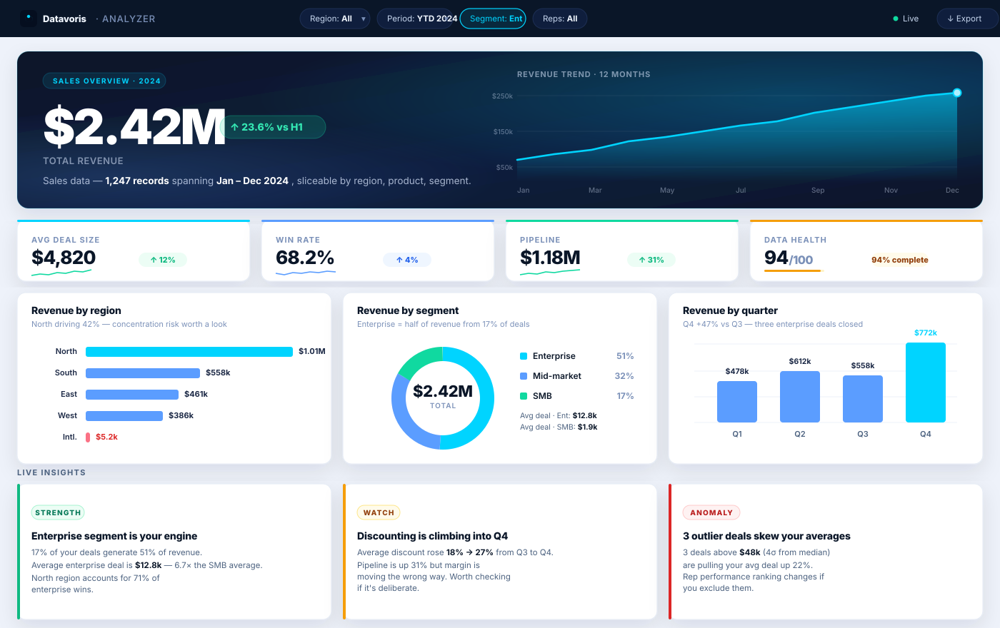

Drop in a spreadsheet, and the analyzer turns it into a real, interactive dashboard — the kind you'd otherwise hire someone to build in Power BI. Here's what that looks like for a sales dataset.

The analyzer classifies every column by name and value pattern — so it features revenue (not the customer ID), and slices by region (not the zip code).
When there's a date column, the hero shows the total, a half-over-half delta, and a wide trend chart — the moment you open it, you know whether things are up or down.
Concentration risk, margin drift, anomalies. The insights panel calls out what's actually interesting — so you spend time deciding, not searching.
Drop a CSV or Excel file into the analyzer — it runs in your browser, your data never leaves your device. If the result looks close to what you need but you want it live, refreshing on its own and delivered to your team — that's the part I build.